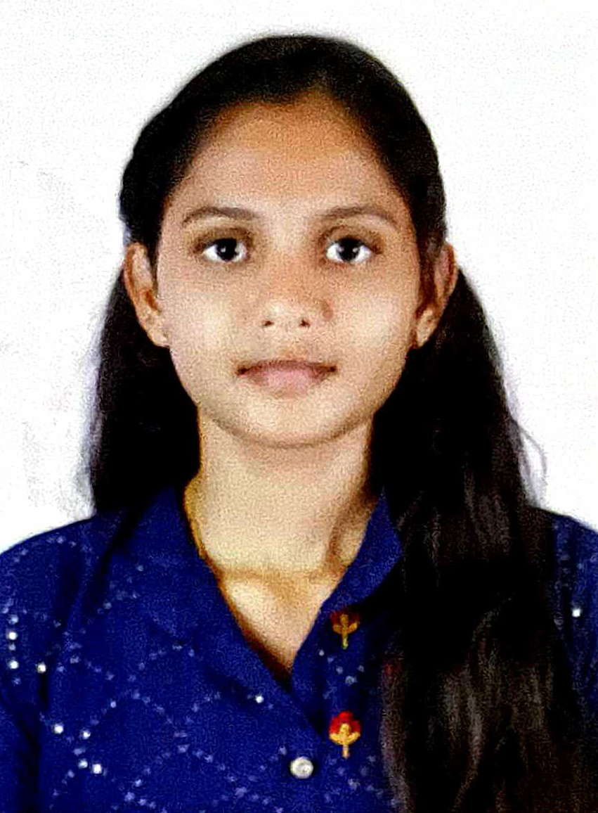

GANJIKUNTA REDDY DEEPIKA
A proactive B-Tech graduate with hands-on experience in Java full-stack development and a keen interest in machine learning. Passionate about creating innovative solutions like movie recommendation systems. Skilled in java, Java script, HTML, and Python, aiming to contribute effectively to a dynamic tech environment
About Me
Ganjikunta Reddy Deepika is a dedicated and ambitious individual from Madanapalle, Andhra Pradesh, with a strong background in computer science and technology. Having completed a BTech degree with a commendable CGPA of 8.12 from Madanapalle Institute of Technology and Science, Deepika has also engaged in multiple internships, gaining hands-on experience in Java full-stack development, machine learning, and digital image processing. Deepika is skilled in various programming languages and technologies, including HTML, CSS, Java, and JavaScript. With a strong sense of leadership, problem-solving abilities, and effective communication skills, Deepika is well-equipped to contribute meaningfully to any team or project. Her commitment to continuous learning and excellence is evident in her achievements, including the Leadership award and the Best Performer award during her BTech studies.
Projects
1. Movie Recommendation System (May 30th - June 28th, 2022)
During a one-month internship at Pantech Solutions, I worked on developing a "Movie Recommendation System" using machine learning techniques. The project involved analyzing user preferences and historical data to suggest movies that align with individual tastes. I applied algorithms to filter and predict user preferences, enhancing the user experience by providing personalized movie recommendations. This project honed my skills in data analysis, algorithm implementation, and Python programming, contributing to my understanding of how machine learning can be used in real-world applications.
2. Digital Image Processing (February 10th - June 30th, 2023)
In a three-month internship focused on Digital Image Processing, I explored various techniques to process and analyze images for different applications. The project involved manipulating and enhancing digital images using algorithms that improved image quality, detected features, and performed object recognition. Throughout this internship, I gained hands-on experience with tools like MATLAB and OpenCV, and deepened my understanding of image processing concepts, including filtering, edge detection, and segmentation. This project strengthened my ability to work with complex data and apply theoretical knowledge to solve practical problems in image analysis.
Internships
"QSpiders (February 2024 - July 2024): During this internship, I delved into Java full-stack development, gaining substantial hands-on experience in Java programming. I developed a solid foundation in web technologies such as HTML, CSS, and JavaScript, allowing me to build and enhance web applications effectively. Additionally, I worked on various real-world projects, which helped me understand the intricacies of backend and frontend integration, database management, and the overall development lifecycle. This internship provided me with practical skills and a deeper insight into full-stack development, preparing me for future challenges in the field."